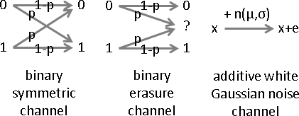
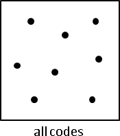
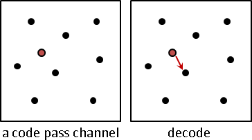
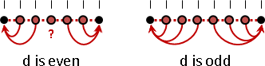
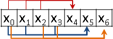
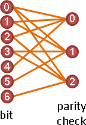
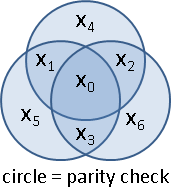
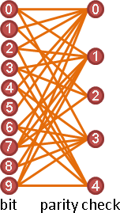

Convolution Code（Under Construction!）
Convolution Code
引入「Hidden Markov Model」的概念，畫成狀態轉移圖。
解碼，即是找到最好的路徑，Viterbi Algorithm。有人把動態規劃的過程圖，叫做Trellis Diagram。
Turbo Code
Correction
Error Detection / Error Correction
「錯誤偵測」和「錯誤更正」。偵測較簡單，更正較複雜。
有些時候，我們只需要偵測，不需要更正。例如網路傳輸，如果發現出錯了，麻煩對方馬上重傳一次就好。例如身份證字號，最後一碼是驗證碼，一方面避免卡號連續、一方面避免行政人員輸入錯誤；如果輸入錯誤，重新輸入就好。偵測錯誤的演算法非常多，例如Luhn Algorithm。
有些時候，我們必須要更正。例如CD光碟片，時間久了染料變質了，資料不正確，就必須更正資料。例如火星探勘太空船發送到地球的訊息，由於距離太遠了，重傳太花時間，必須直接更正。
Channel
天有不測風雲，人有旦夕禍福。資料損毀變異怎麼辦？
電腦世界當中，資料通常是經過傳輸而損毀。於是數學家想像有一個「通道」，宛如函數，一筆資料經過通道得到一筆資料，可能不變，可能出錯。
數學家引入機率的概念、引入遞增法化整為零的概念，令每一個位元有固定機率出錯。現實生活有著千奇百怪的出錯原因；數學家便設計了各式各樣的通道，儘量符合現實情況。
以下文章不談通道，讓事情單純一點！
Encode / Decode
不像壓縮與加密特別訂立新名詞，更正直接沿用舊名詞。
「編碼」是資料變碼。「解碼」是碼變資料。碼經過「通道」將有一定機率損毀變異。
「編碼」是補強資料。「解碼」是復原資料。
encode
0010001 -------> 001000100100010010001
↓ channel
0010001 <------- 001100110100010010000
decode
(detect/correct)
Repetition Code
以重複備份偵測錯誤、更正錯誤
資料損毀變異怎麼辦？製作備份，有備無患。
原始資料：時今 備份資料：時令 發現錯別字「今」，應該改成「令」。
前面假設備份資料絕對沒問題。如果備份資料可能有問題呢？
時今 時令 時令 發現錯別字「今」，應該改成「令」。 時令 時今 時今 時令 無法確定錯別字。 時令 時今 時令 時今 時今 時今 錯別字誤判為「令」。
只要正確資料過半，就能正確修復。然而無論多少備份，仍有機會毀損達半，無法修復。我們只能多建立備份，避免憾事發生。
如果需要更細膩的結論，可以引入機率：設定毀損機率、計算修復機率。
Repetition Code
00110001 ---> 001100010011000100110001
電腦世界也有類似的演算法：原始資料重複數次。
此演算法有兩種視角：備份資料放在原始資料尾端（主從、狹觀）、各份資料相互支援（平等、宏觀）。
電腦以位元為單位。針對一個特定位元，只要所有對應的位元，正確比錯誤多，即可正確地偵測錯誤、更正錯誤。
此演算法相當耗費記憶體空間、耗費處理時間。因此有人研發更好的演算法。
如果需要更細膩的結論，可以引入「通道」：設定毀損機率、計算修復機率。
編碼：資料重複N-1次（一共N份），變成碼。 解碼：針對每個位元，找到所有對應位元（一共N個），投票過半者，推定為正解。
Hadamard Code
以最短距離來偵測錯誤、更正錯誤
資料長度為N個位元。一共2^N種資料。
碼長度為N+K個位元。(N+K)維空間，挑選2^N個相異座標點，當作碼。自由規定資料與碼的對應方式。
想要偵測錯誤、更正錯誤，最常見的手法是增加資料長度。因此此處的碼長度（空間維度）略大於資料長度。
偵測錯誤：給定一個待測碼，從2^N個碼之中，找到相同的碼。找不到就表示有錯誤。
更正錯誤：給定一個待測碼，從2^N個碼之中，找到差異最小、距離最近的那一個碼，直接更正成那一個碼。
我們在意的是：錯誤位元有幾個？於是距離設為「相異位元的數目」，即「Hamming Distance」。距離是整數。
N=5 example:
[0] [0] [1] [0]
hamming [1] [1] hamming [1] [0]
distance( [1] , [0] ) = 2 distance( [1] , [0] ) = 5
[1] [0] [1] [0]
[1] [1] [1] [0]
[1] [1] [1] [0]
hamming [1] [1] hamming [1] [0]
distance( [0] , [0] ) = 0 distance( [0] , [1] ) = 5
[1] [1] [0] [1]
[1] [1] [0] [1]
碼之間的距離越遠，容忍越多錯誤！令碼的兩兩距離皆大於等於d，中點為分野，當d是偶數、奇數，即便錯d/2、(d-1)/2個位元，仍可正確偵測；即便錯d/2-1、(d-1)/2個位元，仍可完全修復。如果錯太多，就誤判了。
挑選2^N個座標點，只要令兩兩距離大於等於d，就能容忍將近d/2個錯誤位元，正確偵測、完全修復！
增加碼長度（空間維度），得拉開兩兩距離、增加d、調整d、調整容忍程度。代價是碼變長，耗費記憶體空間、耗費處理時間。
編碼：建立表格，2^N種資料對應到2^N個座標點。 解碼：窮舉2^N個座標點，找到Hamming距離最小者。
Hadamard Code
利用「Hadamard Matrix」，N個向量當作碼，兩兩距離皆大於等於N/2。證明交給讀者。
HN = [HN/2 HN/2]
[HN/2 HN/2]
H₂ H₄ H₈
[0 0] [0 0 0 0] [0 0 0 0 0 0 0 0]
[0 1] [0 1 0 1] [0 1 0 1 0 1 0 1]
[0 0 1 1] [0 0 1 1 0 0 1 1]
[0 1 1 0] [0 1 1 0 0 1 1 0]
[0 0 0 0 1 1 1 1]
[0 1 0 1 1 0 1 0]
[0 0 1 1 1 1 0 0]
[0 1 1 0 1 0 0 1]
通常擴充成2N個碼。原本數值反轉即得。
H₂ H₄ H₈
[0 0|1 1] [0 0 0 0|1 1 1 1] [0 0 0 0 0 0 0 0|1 1 1 1 1 1 1 1]
[0 1|1 0] [0 1 0 1|1 0 1 0] [0 1 0 1 0 1 0 1|1 0 1 0 1 0 1 0]
[0 0 1 1|1 1 0 0] [0 0 1 1 0 0 1 1|1 1 0 0 1 1 0 0]
[0 1 1 0|1 0 0 1] [0 1 1 0 0 1 1 0|1 0 0 1 1 0 0 1]
[0 0 0 0 1 1 1 1|1 1 1 1 0 0 0 0]
[0 1 0 1 1 0 1 0|1 0 1 0 0 1 0 1]
[0 0 1 1 1 1 0 0|1 1 0 0 0 0 1 1]
[0 1 1 0 1 0 0 1|1 0 0 1 0 1 1 0]
碼長度、碼數量皆已確認！那麼資料長度呢？
引入線性組合的概念，找到這些向量的basis。基底向量的個數，設定成資料長度；一筆資料套用線性組合求得對應的碼！
H₂ H₄ H₈
basis basis basis (H₄ example)
[1 1] [1 1 1] [1 1 1 1] encode encode
[1 0] [1 1 0] [1 1 1 0] 101 -------> 0101 111 -------> 1001
[1 0 1] [1 1 0 1] [1 1 1] [1] [0] [1 1 1] [1] [1]
[1 0 0] [1 1 0 0] [1 1 0] [0] = [1] [1 1 0] [1] = [0]
[1 0 1 1] [1 0 1] [1] [0] [1 0 1] [1] [0]
[1 0 1 0] [1 0 0] [1] [1 0 0] [1]
[1 0 0 1]
[1 0 0 0]
資料長度呈線性成長，碼長度卻呈指數成長，付出代價極大！
矩陣 | 碼 | 基底 | 資料 | 碼 | 兩兩 | 偵測 | 更正 | 編碼率 大小 | 數量 | 向量 | 長度 | 長度 | 距離 | 錯誤 | 錯誤 | 資料與碼的比例 -----|------|------|------|------|--------|------|------|--------------- N=2 | 4 種 | 2個 | 2 | 2 | 至少1 | 0 | 0 | 2/2（毫無功能） N=4 | 8 種 | 3個 | 3 | 4 | 至少2 | 1 | 0 | 3/4（只能偵測） N=8 | 16種 | 4個 | 4 | 8 | 至少4 | 2 | 1 | 4/8 N=16 | 32種 | 5個 | 5 | 16 | 至少8 | 4 | 3 | 5/16 N=32 | 64種 | 6個 | 6 | 32 | 至少16 | 8 | 7 | 6/32
實務上N都很小，因此不必研發特別的解碼演算法。解碼採用試誤法，簡單而迅速。
編碼：預先建立所有碼的basis。資料經過線性組合得到碼。 解碼：窮舉所有資料並且求得碼，找到Hamming距離最小者。 一旦發現Hamming距離小於N/2，即可立即結束，推定為正解。
由於付出代價極大，實務上不採用此演算法。
Reed-Muller Code
http://homepages.math.uic.edu/~leon/mcs425-s08/handouts/Hadamard_codes.pdf
以Hadamard Code的基底向量作為素材，兩兩內積（甚至三三內積、四四內積），構造更複雜的基底向量。
Hill Code（Under Construction!）
以備忘錄偵測錯誤、更正錯誤
http://wdjoyner.org/papers/hill-vs-hamming.pdf
https://wdjoyner.files.wordpress.com/2016/08/hill-error-checking-notes-unpublished.pdf 原本文字長度r 設定一組權重a1...ar 把權重一次方、二次方、三次方、...、k次方，得到k組權重 k個parity，是k個加權平均值 一種方便的設定方式是找到一個大矩陣， 其中每個子矩陣都有反矩陣， 如此就可以從中隨意挑選一個矩陣來編碼。
Hamming Code
以前後文偵測錯誤、更正錯誤
最簡單的方法是：原始資料直接重複好幾次。更聰明的方法是：補充說明，依照前後文推敲正文。
資料：好人氣 不知是否有錯別字。 資料：好人氣青空萬里 發現錯別字「人」，應該改成「天」。 發現錯別字「青」，不過沒關係。
Parity Check
電腦世界當中，由於物理電子電機已臻化境，網路線傳輸、無線傳輸、USB傳輸、燒錄光碟、讀取光碟，資料毀損機率極低，只需容忍很少的錯誤位元。因此有人研發容忍程度極低、卻非常節省空間時間的演算法。接下來介紹僅容忍一個錯誤位元的演算法，只能偵測錯誤，無法更正錯誤。
00110001 ---> 001100011 0+0+1+1+0+0+0+1 = 1 (mod 2) 10101001 ---> 101010010 1+0+1+0+1+0+0+1 = 0 (mod 2)
001100011 ✔ 0+0+1+1+0+0+0+1+1 = 0 (mod 2) 101011010 ✖ 1+0+1+0+1+1+0+1+0 = 1 (mod 2)
編碼：資料所有位元xor（先求和、再模二）， 得到一個位元（稱作parity），添在資料尾端。 偵測：碼所有位元xor，等於0則對，等於1則錯。
錯零個位元、錯一個位元，保證正確偵測錯誤；錯兩個位元以上，不保證正確偵測錯誤。無法更正錯誤。
最後附上一個益智問題：
陣列裡放入 1 到 100 的正整數，但是少了一個。請找出少了哪一個？ 使用 Counting Sort ，時間複雜度極低，但是空間複雜度極高。 有沒有更節省記憶體的方法呢？
UVa 541
Hamming Code：編碼
接下來介紹僅容忍一個錯誤位元的演算法，可以更正錯誤。
增為三個parity。這是經過精心設計的，有很強的數學性質。
寫成代數式子：
x4 = x0 + x1 + x2 x5 = x0 + x1 + x3 x6 = x0 + x2 + x3
範例：
0123 encode 0123456 0000 -------> 0000000 1111 -------> 1111111 0011 -------> 0011110 1010 -------> 1010010
Hamming Code：所有的碼
從屬關係改成平等關係。
x0 + x1 + x2 + x4 = 0 x0 + x1 + x3 + x5 = 0 x0 + x2 + x3 + x6 = 0
聯立所有式子，所有解就是所有碼。
{ x0 + x1 + x2 + x4 = 0
{ x0 + x1 + x3 + x5 = 0
{ x0 + x2 + x3 + x6 = 0
[x0]
[x1]
[1 1 1 0 1 0 0] [x2] [0]
[1 1 0 1 0 1 0] [x3] = [0]
[1 0 1 1 0 0 1] [x4] [0]
[x5]
[x6]
H x = 0
Hamming Code：碼的兩兩距離
證明過程非常奇葩，絕非常人所能及。看看就好。
一、Hx=0。碼即解。
[0] | [1]
[0] | [0]
[1 1 1 0 1 0 0] [1] [0] | [1 1 1 0 1 0 0] [1] [0]
[1 1 0 1 0 1 0] [1] = [0] | [1 1 0 1 0 1 0] [0] = [0]
[1 0 1 1 0 0 1] [1] [0] | [1 0 1 1 0 0 1] [0] [0]
[1] | [1]
[0] | [0]
H x = 0 | H x = 0
二、兩個碼的距離，等於，兩個碼相加後有幾個1。
[0] [1] [0] [1] [0] [1]
[0] [0] how [0] [0] [0] [0]
hamming [1] [1] many [1] [1] hamming [1] [1]
distance( [1] , [0] ) = 1s? ( [1] + [0] ) = weight ( [1] + [0] )
[1] [0] [1] [0] [1] [0]
[1] [1] [1] [1] [1] [1]
[0] [0] [0] [0] [0] [0]
三、運用矩陣運算的線性、運用模數運算的封閉性：兩個解相加，恰是，某一個解！所有解兩兩相加，恰是，所有解（剔除零向量）！所有解的兩兩距離，變成，所有解（剔除零向量）數1。
[0] [1] [1] [0] [0] [0] [1] [1] [0] [1] + [0] = [1] 會是 Hx=0 的某一個解 [1] [0] [1] [1] [1] [0] [0] [0] [0]
四、運用線性組合：一個解的1，變成，1所對應的矩陣向量，相加等於零向量。
[0]
↓ ↓ ↓ [1]←
[1 1 1 0 1 0 0] [0] [0]
[1 1 0 1 0 1 0] [1]← = [0]
[1 0 1 1 0 0 1] [0] [0]
[1]←
[0]
H x = 0
有兩個解（碼）距離為3。
有一個解恰有三個1。
矩陣H有三個向量相加是零向量。
五、採用試誤法，嘗試各種距離。採用反證法，證明各種距離不成立。運用矩陣向量，判斷碼的距離。
有兩個碼（解）距離為0：碼皆相異，顯然不成立。 有兩個碼（解）距離為1：某一個解僅有一個1，某一個矩陣向量是零向量。 但是矩陣沒有零向量。不成立。 有兩個碼（解）距離為2：某一個解僅有兩個1，某兩個矩陣向量相加等於零向量。 但是矩陣向量兩兩相加都不是零向量。不成立。 有兩個碼（解）距離為3：仿前。確實有三個向量相加是零向量。成立。
故碼的兩兩距離皆大於等於3。錯1個位元，仍可完全修復。
六、碼的兩兩距離大於等於n，變成，矩陣向量沒有零向量、兩兩相加沒有零向量、三三相加沒有零向量、……、n-1n-1相加沒有零向量，而nn相加可得零向量。
也就是說，仔細設計parity式子，得以調整容忍程度。
Hamming Code：解碼
試誤法是窮舉2^N種資料可能性，N是資料長度。以下介紹更快的演算法。
x是正確的碼。x+e是毀損的碼，e是誤差。 Hx = 0 前面談過 H(x+e) = Hx + He = He H(x+e)和He的結果恰好一樣 因為只容許一個錯誤位元， 所以e只能是這8個向量的其中一種： [0] [1] [0] [0] [0] [0] [0] [0] [0] [0] [1] [0] [0] [0] [0] [0] [0] [0] [0] [1] [0] [0] [0] [0] [0] [0] [0] [0] [1] [0] [0] [0] [0] [0] [0] [0] [0] [1] [0] [0] [0] [0] [0] [0] [0] [0] [1] [0] [0] [0] [0] [0] [0] [0] [0] [1] 0 e0 e1 e2 e3 e4 e5 e6 至於其他情況，無法保證正確修復，不討論。 預先計算He，代入8種可能性。 H0 He0 He1 He2 He3 He4 He5 He6 [0] [1] [1] [1] [0] [1] [0] [0] [0] [1] [1] [0] [1] [0] [1] [0] [0] [1] [0] [1] [1] [0] [0] [1] 以線性組合的觀點，其實就是H的各個向量。
解碼。給定一個碼x+e，計算H(x+e)，即He。判斷He是H0 He0 ... He6當中哪一個，就知道e是多少，就知道錯誤位元。
(example 1)
encode channel decode
1111 -------> 1111111 --------> 1110111 -------> ?
[1] [0]
[1] [0]
[1 1 1 0 1 0 0] [1] [0] [0]
[1 1 0 1 0 1 0] [0] = [1] => e = [1] => bit x3 is wrong.
[1 0 1 1 0 0 1] [1] [1] [0]
[1] [0]
[1] [0]
H (x+e)= He3
(example 2)
encode channel decode
1111 -------> 1111111 --------> 1111110 -------> ?
[1] [0]
[1] [0]
[1 1 1 0 1 0 0] [1] [0] [0]
[1 1 0 1 0 1 0] [1] = [0] => e = [0] => bit x6 is wrong.
[1 0 1 1 0 0 1] [1] [1] [0]
[1] [0]
[0] [1]
H (x+e)= He6
(example 3)
encode channel decode
1111 -------> 1111111 --------> 1111111 -------> ?
[1] [0]
[1] [0]
[1 1 1 0 1 0 0] [1] [0] [0]
[1 1 0 1 0 1 0] [1] = [0] => e = [0] => all right!
[1 0 1 1 0 0 1] [1] [0] [0]
[1] [0]
[1] [0]
H (x+e)= H0
編碼：三個parity式子。 分別計算parity，添在資料尾端。 解碼：三個parity式子，形成矩陣H。 碼代入H。若為0，則正確。 若對應到H的向量，則錯誤；錯誤位元編號即是向量編號。
硬體設備已經內建Hamming Code的電路，其實沒有必要用程式語言實作。
Hamming Code：其他性質
畫成圖論的二分圖（Bipartite Graph）。
畫成集合論的文氏圖（Venn Diagram）。
調動位元順序、矩陣直行順序，讓橫列逐步右挪。更好編碼。
[x0] | [x4]
[x1] | row right shift [x5]
[1 1 1 0 1 0 0] [x2] [0] | [1 0 1 1 1 0 0] [x2] [0]
[1 1 0 1 0 1 0] [x3] = [0] | [0 1 0 1 1 1 0] [x1] = [0]
[1 0 1 1 0 0 1] [x4] [0] | [0 0 1 0 1 1 1] [x0] [0]
[x5] | [x3]
[x6] | [x6]
|
0123 encode 0123456 | 0123 encode 4521036
0000 -------> 0000000 | 0000 -------> 0000000
1111 -------> 1111111 | 1111 -------> 1111111
0011 -------> 0011110 | 0011 -------> 1110010
1010 -------> 1010010 | 1010 -------> 0110100
調動位元順序、矩陣直行順序，讓直行由小到大。更好解碼。
[x0] | lexico order [x6]
[x1] | ------------> [x5]
[1 1 1 0 1 0 0] [x2] [0] | [0 0 0 1 1 1 1] [x3] [0]
[1 1 0 1 0 1 0] [x3] = [0] | [0 1 1 0 0 1 1] [x4] = [0]
[1 0 1 1 0 0 1] [x4] [0] | [1 0 1 0 1 0 1] [x2] [0]
[x5] | [x1]
[x6] | [x0]
推廣位元數量、矩陣大小。碼的兩兩距離依然皆大於等於3，依然只容許一個錯誤位元。
資料長度呈指數成長，parity數量僅呈線性成長，代價銳減！
3 x 2³-1 4 x 2⁴-1 5 x 2⁵-1
[0 0 0 1] [0 0 0 1] [0 0 0 1]
[0 1 1 ... 1] [0 0 0 1] [0 0 0 1]
[1 0 1 1] [0 1 1 ... 1] [0 0 0 ... 1]
[1 0 1 1] [0 1 1 1]
[1 0 1 1]
7bit補足為8bit = 1byte，補入Parity Check。更好儲存。
x4 = x0 + x1 + x2 | x4 = x0 + x1 + x2
x5 = x0 + x1 + x3 | x5 = x0 + x1 + x3
x6 = x0 + x2 + x3 | x6 = x0 + x2 + x3
| x7 = x0 + x1 + x2 + x3 + x4 + x5 + x6
|
0123 encode 0123456 | 0123 encode 01234567
0000 -------> 0000000 | 0000 -------> 00000000
1111 -------> 1111111 | 1111 -------> 11111111
0011 -------> 0011110 | 0011 -------> 00111100
1010 -------> 1010010 | 1010 -------> 10100101
LDPC Code（Low-density Parity-check Code）
自由設計parity，令矩陣稀疏。
x0 + x1 + x2 + x3 + x5 + x7 + x9 = 0
x0 + x2 + x3 + x6 + x7 + x8 + x9 = 0
x1 + x3 + x7 = 0
x0 + x4 + x6 + x7 + x8 + x9 = 0
x2 + x3 + x4 + x6 + x8 = 0
[x0]
[x1]
[1 1 1 1 0 1 0 1 0 1] [x2] [0]
[1 0 1 1 0 0 1 1 1 1] [x3] [0]
[0 1 0 1 0 0 0 1 0 0] [x4] = [0]
[1 0 0 0 1 0 1 1 1 1] [x5] [0]
[0 0 1 1 1 0 1 0 1 0] [x6] [0]
[x7]
[x8]
[x9]
H x = 0
表示成二分圖。
解碼。自由設計之後，缺乏數學性質。求最佳解是NP-Hard問題，只好求近似解。其中一種演算法：Belief Propagation Decoding，採用Iterative Method，用二分圖的一側算出另一側，兩側交替計算，直到收斂為止。有興趣的讀者請自行研究。
簡易範例：http://sigpromu.org/ldpc/
LDPC Code是當前「資料與碼的比例」最高的演算法，節省空間與時間，非常實用！例如無線通訊Wi-Fi (IEEE 802.11)、WiMAX (IEEE 802.16)就有使用。
由於硬體設備已經內建LDPC Code的電路，其實沒有必要用程式語言實作。
Reed-Solomon Code（Under Construction!）
Cyclic Redundancy Check（CRC）
資料看作餘數多項式，係數模二。
11100010 <-> x⁷ + x⁶ + x⁵ + x
兩造事先約定一個質式，作為除數。
11000101 <-> x⁷ + x⁶ + x² + 1 1100000001111 <-> x¹² + x¹¹ + x³ + x² + x + 1 11000000000100001 <-> x¹⁶ + x¹⁵ + x⁵ + 1
編碼：資料尾端補零，數量是除數最高次方。實施長除法。餘數當作parity，添在原始資料尾端。
11100010 ---> 111000100010111
111000100000000 ÷ 11000101 = 10111011 ... 0010111
111000100000000
11000101 1
---------------
01001110
00000000 0
---------------
10011100
11000101 1
---------------
10110010
11000101 1
---------------
11101110
11000101 1
---------------
01010110
00000000 0
---------------
10101100
11000101 1
---------------
11010010
11000101 1
---------------
0010111
偵測：碼除以除數。整除即正確，不整除即錯誤。
111000100010111 ✔ 111000100010111 ÷ 11000101 = 0
毀損的位元，跟除數不一樣，偵測結果就正確。
UVa 128
Damm Algorithm
【待補文字】
Reed-Solomon Code
http://www.math.umn.edu/~garrett/coding/Overheads/19_hamming_bch.pdf
BCH Code（Under Construction!）
BCH Code（Bose-Chaudhuri-Hochquenghem Code）
http://w3.math.sinica.edu.tw/math_media/d184/18404.pdf
http://www.aqdi.com/bch.pdf
更正多個錯誤。
要增加距離，就讓矩陣向量四四相加不是零向量、五五相加不是零向量、……。
手法是套用「Finite Field」，延長每個向量，補入奇數次方。
編碼：算好parity，添在尾端。
解碼：解餘數多項式方程式。窮舉法。因式分解。
Convolution Code（Under Construction!）
Convolution Code
引入「Hidden Markov Model」的概念，畫成狀態轉移圖。
解碼，即是找到最好的路徑，Viterbi Algorithm。有人把動態規劃的過程圖，叫做Trellis Diagram。
Turbo Code